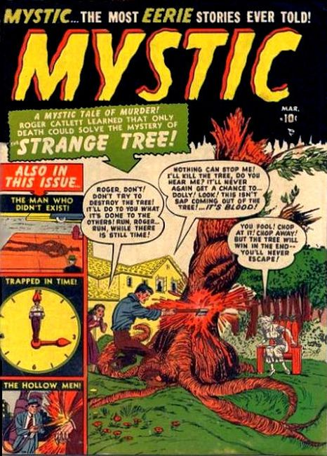

Issue #1:
- "The Man Who Vanished", art by Manny Stallman. An eight foot tall circus freak drinks a shrinking potion that continues to shrink him until he disappears.
- "The Strange Tree!" A man buys a house with a tree out in the yard which possesses people.
- The New England Horror text story.
- "Trapped in Time!" A man travels forward in time and finds that dinosaurs have again returned when man has destroyed himself through nuclear war.
- "The Hollow Men" by Mike Sekowsky. A reporter finds a scientist dead in a castle when the robot he created rebelled against him.